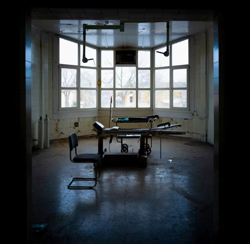

차가운 수술실에 도착했습니다. 수술대, 뇌파 단말기, 그리고 꺼진 전원 스위치들이 보입니다. 스위치 중 하나가 빠져있는 것 같습니다. 이곳에서 무슨 일이 일어났던 걸까요?
🔴
빨간 스위치를 누른다
🔵
파란 스위치를 누른다
🟢
초록 스위치를 누른다
🔍
빠진 스위치를 찾는다
💾
데이터 칩을 삽입한다
💭 기억의 선택
이 기억은 당신의 것입니까? 과거의 기억이 당신을 괴롭힙니다.
✅
받아들인다
❌
거부한다